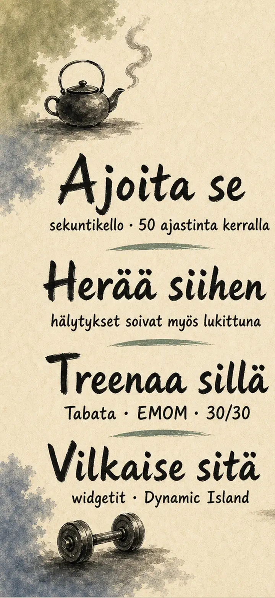
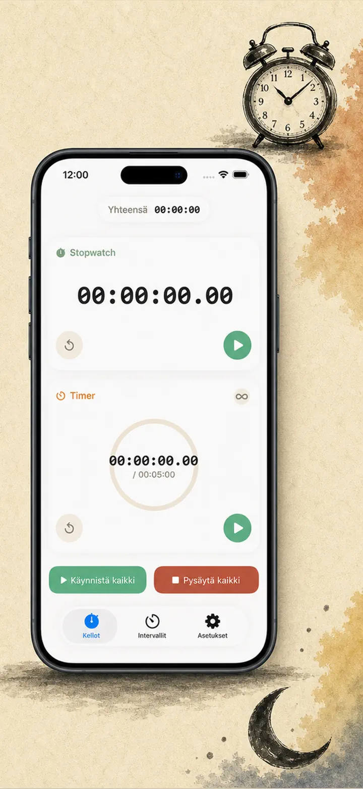
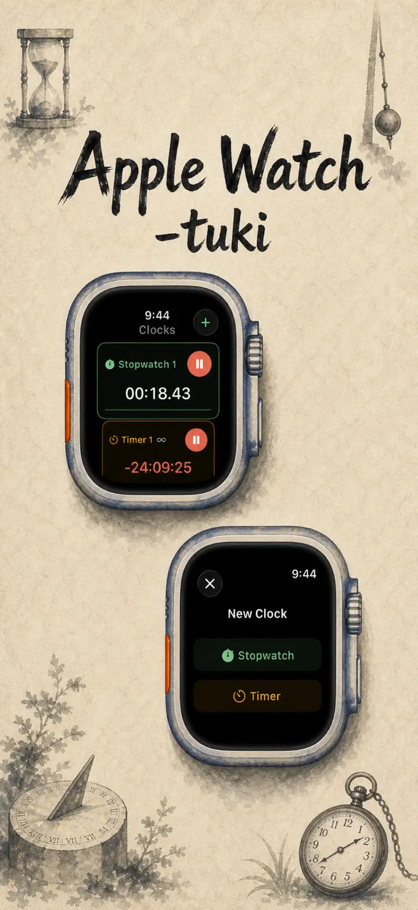
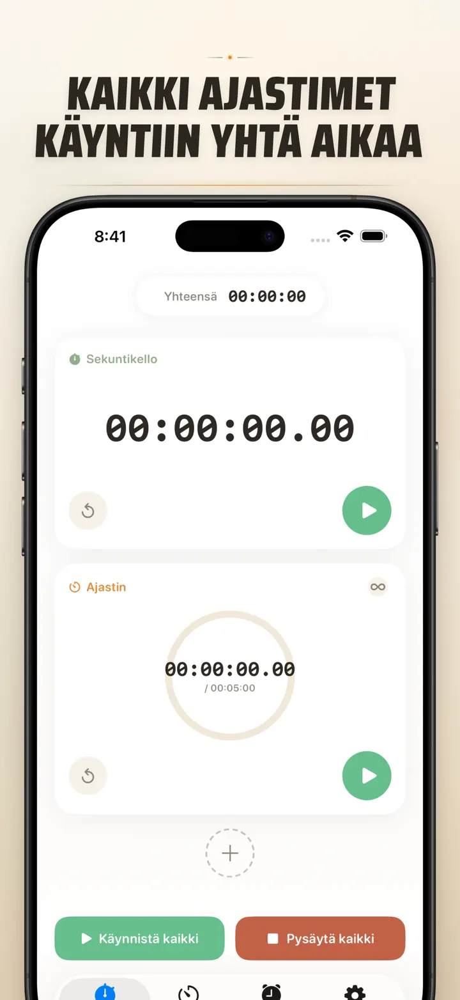
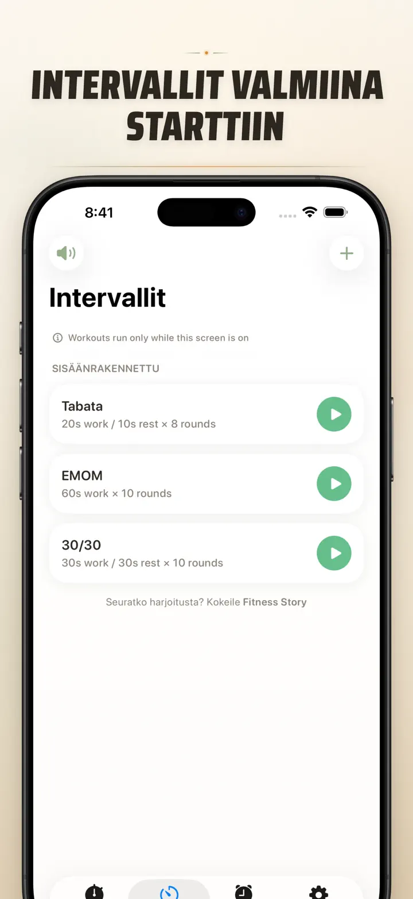
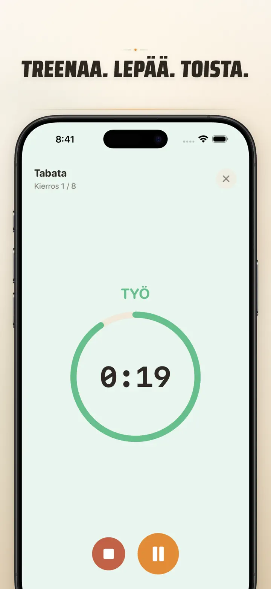
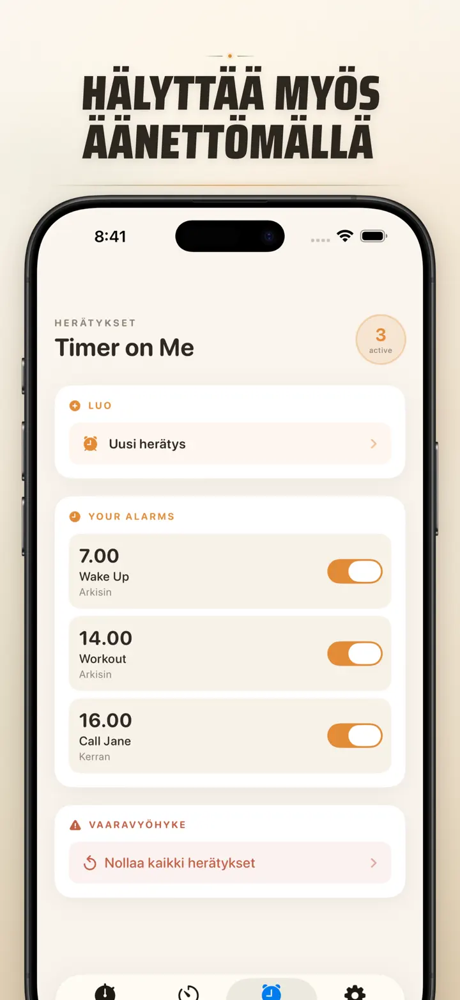

Timer on Me
Ajastin, herätys, HIIT, sauna
Nyt päivämääräherätykset: kertaluonteinen herätys mille tahansa tulevalle päivämäärälle, toistuvia herätyksiä, 50 ajastinta, HIIT & Tabata ja Apple Watch.
Lataa App Storesta
Tietoja apista
Timer on Me on moniajastin ja sekuntikello iPhonelle, iPadille ja Apple Watchille. Jopa 50 itsenäistä ajastinta yhtä aikaa, tarkat intervallitreenit ja hälytykset, jotka oikeasti soivat — myös kun iPhone on lukossa tai sovellus kiinni.
HERÄTYKSET
- Herätys- ja muistutushälytykset omilla nimillä ja viikonpäiväaikatauluilla
- AlarmKitin voimalla — soi myös kun iPhone on lukossa tai Timer on Me kiinni
- Säädettävä torkku (3 / 5 / 9 / 15 / 30 minuuttia) tai ei torkkua lainkaan
- Valitse sisäänrakennetuista soittoäänistä tai tuo omat äänesi
- Päälle ja pois yhdellä napautuksella omasta Herätys-välilehdestä
TREENI JA INTERVALLIT
- Valmiit Tabata-, EMOM- ja 30/30-presetit — kaksi napautusta ja menoksi
- Oma intervallieditori: työ, lepo ja kierrokset minuutteina ja sekunteina
- Koko näytön treenitila, värinvaihto vaiheittain ja hiljainen tila
- Pysäytys, ohitus ja jatkaminen kesken treenin ilman etenemisen menetystä
APPLE WATCH
- Aito natiivi watchOS-sovellus, ei pelkkä puhelimen peili
- Useita sekuntikelloja ja ajastimia ranteessa yhtä aikaa
- Sekuntikello sadasosasekunnin tarkkuudella
- Omat kellotaulun komplikaatiot yhden napautuksen käynnistykseen
- Toimii itsenäisesti, vaikka iPhone ei olisi lähellä
50 AJASTINTA YHTÄ AIKAA
- Jopa 50 itsenäistä ajastinta ja sekuntikelloa samassa istunnossa
- Käynnistä, pysäytä ja nollaa yksittäin tai ryhminä
- Automaattinen toisto syklisille kierroksille
- Ajastimet jatkavat nollan jälkeen ylitysajan tallentamiseksi
- Värilliset edistymispalkit: keltainen 50 %:ssa, punainen 10 %:ssa
- Järjestä vetämällä, nimeä omin sanoin
LUOTETTAVAT HÄLYTYKSET
- AlarmKit: hälytykset soivat myös kun iPhone on lukossa tai sovellus kiinni
- Dynamic Island ja Live Activity — eteneminen yhdellä vilkaisulla
- Kotinäytön widgetit: pieni, keskikoko, suuri
- Sisäänrakennetut äänet: kellot, linnunlaulu, vintage-puhelimet
- Napauta kuullaksesi ennen valintaa
- "Pidä näyttö päällä" -tila pitkiin treeneihin
MUKAUTA JA JAA
- Näytä tai piilota desimaalit, summat ja prosentit
- Tallenna ja korvaa presetit, palauta yhdellä napautuksella
- Vie CSV-, JSON- tai tekstitiedostona
- Jaa kollegoille, oppilaille tai valmentajalle
iPhonelle, iPadille JA APPLE WATCHille
- Sovitteleva asettelu kaikille näyttökokoille
- Split View iPadilla
- 34 kieltä
TÄYDELLINEN
- HIIT, Tabata, CrossFit ja kiertoharjoittelu
- Nyrkkeily, potkunyrkkeily ja kamppailulajien kierrokset
- Pomodoro, ylioppilaskirjoitukset ja keskittyminen
- Kahvin suodatus, tee, pehmeäksi keitetty kananmuna, uunin ajat
- Jooga, pilates, meditaatio ja hengitysharjoitukset
- Esitysharjoitukset ja soittoläksyt
- Oppitunnit, työpajat ja ryhmätoiminta
- Lautapelit ja saunailtojen ajoitukset
Lataa Timer on Me ja ota jokainen minuutti haltuun — salilla, töissä tai kotona.
Tietosuojakäytäntö: https://masawata.net/privacy-policy.html Käyttöehdot: https://www.apple.com/legal/internet-services/itunes/dev/stdeula/
Näyttökuvat






Timer on Me
Nyt päivämääräherätykset: kertaluonteinen herätys mille tahansa tulevalle päivämäärälle, toistuvia herätyksiä, 50 ajastinta, HIIT & Tabata ja Apple Watch.
Lataa App Storesta